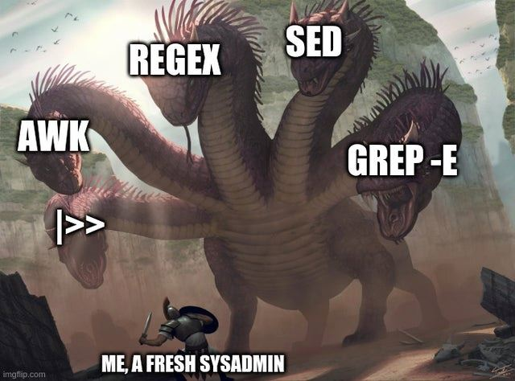

15 Ejercicios en equipo
Reúnanse en equipos de 3 personas para completar uno de los ejercicios propuestos en esta sección, algunos de los ejercicios provienen de la actividad de 6. Extracción de información de archivos fastq del curso de GNU/Linux para Bioinformática organizado por RSG Ecuador.
15.1 Extracción de información de archivos fastq
En este ejercicio se obtendrá información de archivos fastq, que cotienen secuencias de nucleótidos y la calidad de su proceso de secuenciación. Para esto usaremos los archivos secuencias1.fastq, secuencias2.fastq y secuencias3.fastq que se encuentra en la carpeta _files dentro del directorio raíz del repositorio de GitHub unix.bioinfo.rsgecuador .
Ejercicio 10.1 Contar el número de secuencias con diez “N” seguidas por cada archivo FASTQ
La letra N representa un nucleótido que no pudo ser leído correctamente, y se reporta como ninguno, o missing data. Imprime el número de secuencias que tenga diez N seguidas por cada uno de los archivos fastq de la carpeta _files.
Es posible realizar esto con un comando de una sola línea, intenta resolverlo de esta forma.
Ejercicio 10.2 Contar el número de secuencias con un string en cada archivo FASTQ
Ahora, determina el número de secuencias (lineas) de cada archivo .fastq por separado. Se conoce que los títulos de las corridas de las secuencias en cada archivo .fastq empiezan con el string @SRR098026.
Ejercicio 10.3 Identifica el número de secuencias con calidad baja
En los archivos FASTQ, la tercera línea de cada entrada contiene el símbolo +, mientras que la cuarta línea representa la calidad de la secuencia en formato ASCII. Determina cuántas secuencias tienen una calidad promedio por debajo de un umbral específico (por ejemplo, una calidad promedio menor a 20).
Ejercicio 10.4 Cuenta cuántas secuencias únicas hay en cada archivo
Determina cuántas secuencias únicas (sin repeticiones) existen en cada archivo. Asegúrate de ignorar las líneas que comienzan con @ o +, ya que no forman parte de las secuencias.
Ejercicio 10.5 Encuentra la longitud promedio de las secuencias
Calcula la longitud promedio de las secuencias en cada archivo. Esto requiere sumar las longitudes de todas las secuencias y dividirlas entre el número total de secuencias.
Ejercicio 10.6 Calcular el porcentaje de GC con una lista de archivos
Tomando en cuenta el ejercicio anterior, calcula el porcentaje de GC de los tres archivos fastq secuencias1.fastq, secuencias2.fastq, secuencias3.fastq utilizando ciclos y/o bucles.
Ejercicio 10.7 Calcular el contenido de bases por secuencias
Calcula el contenido de cada una de las bases en las secuencias del archivo secuencias1.fastq, A,T,G,C y N.
Ejercicio 10.8 Calcular la distribución de longitudes en una lista de archivos
Calcula la distribución de las longitudes de las secuencias en una lista de archivos fastq. En este ejercicio, deberán discutir qué hace cada uno de los pasos dentro del script y discutirlos con el resto de la clase.
Ejercicio 10.9 Encontrar la longitud de la secuencia más larga
Determina la longitud de la secuencia más larga entre los archivos FASTQ.
Ejercicio 10.10 Encontrar un motivo específico en un archivo FASTQ
El objetivo de este ejercicio es buscar un motivo específico (un patrón de nucleótidos) dentro de las secuencias de un archivo FASTQ y contar cuántas secuencias contienen ese motivo.
Ejemplo de motivo: Supongamos que el motivo a buscar es AGCT
Y la historia continua ….

15.2 Material suplementario
- RSG Ecuador. Scripts en Bash
- RSG Ecuador. Wildcards y Streams
- RSG Ecuador. Expresiones regulares (regex)
- Wildcard Selection in Bash